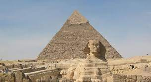
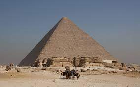
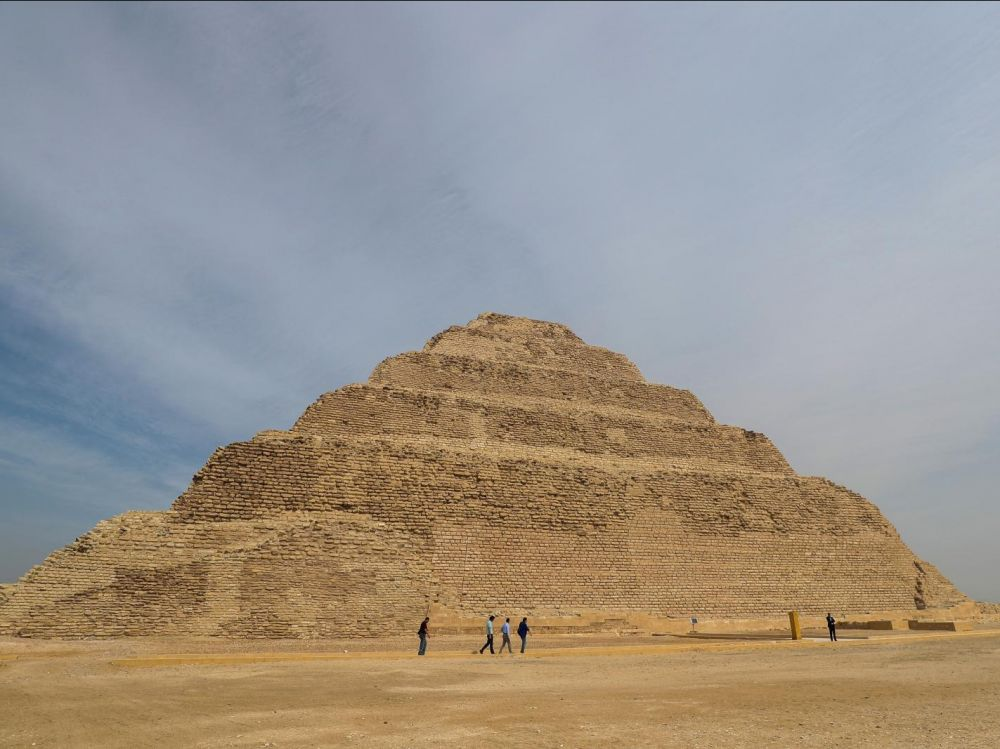

Les pyramides d'Égypte, de tous les vestiges monumentaux que nous ont légués les Égyptiens de l'Antiquité, et notamment les trois grandes
pyramides de Gizeh, sont à la fois les plus impressionnantes et les plus emblématiques de cette civilisation. Si elle fut, à son origine,
destinée au roi, l'idée d'une sépulture pyramidale fut rapidement reprise par les proches du souverain. Khéops semble avoir été le premier à
autoriser ses femmes à se faire élever un tel tombeau.
Tombeaux des rois, des reines et des grands personnages de l'État, dont l'édification remonte pour la grande majorité à l'Ancien Empire,
la forme pyramidale de pierre accueille une ou plusieurs chambres internes reliées par des couloirs. La grande pyramide de Gizeh, construite par
Khéops, fait partie des Sept Merveilles du monde antique et est classée au patrimoine mondial de l'humanité.
Le mastaba, construction quasi rectangulaire, était la sépulture des souverains de l'Ancien Empire. Les raisons du passage des
mastabas aux pyramides ne sont pas clairement établies, mais on évoque généralement le souhait d'atteindre des hauteurs de plus en plus
considérables pour manifester l'importance et la puissance du pharaon défunt. Les premiers mastabas, à étage unique, ont tout d'abord
évolué vers des mastabas à deux étages permettant d'accueillir de nouvelles structures funéraires, le second étage étant moins
large et moins haut que le premier.
La pyramide de Kheops


La grande pyramide de Khéops est sans nul doute la pyramide la plus célèbre. Formant une pyramide carrée de 137 m de
hauteur (initialement de 146 m, c'est-à-dire plus haute que la basilique Saint-Pierre à Rome (139 m), elle fut édifiée il y a
plus de 4500 ans, sous la IVe dynastie, au centre d'un vaste complexe funéraire se situant à Gizeh. Elle est la seule des Sept
Merveilles du monde de l'Antiquité à avoir survécu.
Durant des millénaires, elle fut la construction humaine de tous les records, la plus haute, la plus volumineuse et
la plus massive. Véritable symbole de tout un pays, ce monument est depuis plus de 4 500 ans scruté et étudié sans relâche.
Le tombeau, véritable chef-d'œuvre de l'Ancien Empire, représente la concentration et l'aboutissement de toutes les techniques
architecturales mises au point depuis la création de l'architecture monumentale en pierre de taille par Imhotep pour la pyramide
de son souverain Djéser. Toutefois, les nombreuses particularités architectoniques et les exploits atteints en font une pyramide
qui ne cesse de captiver l'imagination.
La pyramide de Djéser

Le complexe funéraire du roi Djéser(IIIeme dynastie) érigé à Saqqarah marque, dans l'histoire de l'architecture égyptienne,
une double innovation:l'adoption de la forme pyramidale pour le tombeau du souverain et l'utilisation systématique de la pierre de
taille en assises réglées. Couvrant une superficie de 15 hectares, l'ensemble, enclos dans une enceinte bastionnée, comprend,
outre la sépulture du pharaon, des édifices cultuels et des bâtiments factices, immense décor propre à assurer la pérennité des
rites spécifiques de la monarchie. Dominant le tout, la pyramide à six degrés, d'une hauteur d'environ 60 mètres, représente
l'escalier permettant au souverain défunt d'accéder au ciel afin d'accomplir sa destinée solaire, tandis que son corps repose
dans le caveau dallé de granit, creusé en substructure à une profondeur de 28 mètres. Pour cette réalisation, transcription
monumentale de l'essence divine de la royauté, l'architecte Imhotep, « charpentier, sculpteur », mais aussi « grand prêtre>
d'Héliopolis », ville où était adoré le dieuRê, a, sur le plan technique, exploité à grande échelle le savoir-faire acquis
par les tailleurs de pierre au cours des générations précédentes.
Pour en savoir plu sur cette pyramide unique,Cliquez ici!